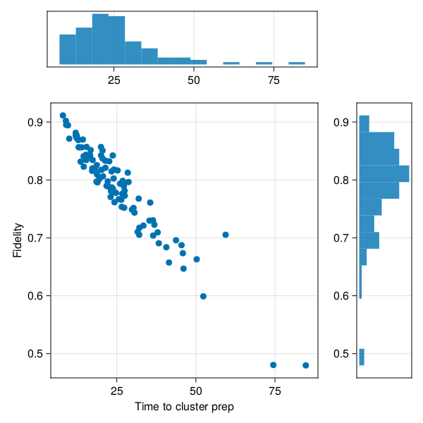

Cluster State on Color Centers
Cluster states are highly entangled state of qubits useful as a computational resource. The cluster state is also a graph state where the graph has a 2D grid topology.
One interesting hardware implementation involves entangling a large number of color centers[1].
We will build a simulator for such a piece of hardware. Each node will be a register of one electron spin for networking and one nuclear spin in which the actual long-term entanglement is "stored". The visualization below shows an example of the state being generated, together with tracking the state of various locks and other metadata that needs to be tracked.
Of interest is both the time it takes to prepare a full cluster state, as well as the fidelity of state being prepared in that fashion. The fidelity can be lowered due to the numerous noise processes experience by the hardware. The duration can be quite long due to the low efficiencies of photon capture during typical entanglement procedures. The plot below shows the distribution of these figures of merit, sampled from a large number of independent runs of the simulation (gathering the entirety of this date takes less than a second).

For organizing the simulation and simplifying the digital and analog quantum dynamics, we will use the star of QuantumSavory.jl, namely the Register data structure. For a convenient data structure to track per-node metadata in a graph (network) we will use the RegisterNet structure.
Moreover, behind the scenes QuantumSavory.jl will use:
ConcurrentSim.jlfor discrete event scheduling and simulation;Makie.jltogether with our custom plotting recipes for visualizations;QuantumOptics.jlfor low-level quantum states.
The user does not need to know much about these libraries, but if they wish, it is easy for them to peek behind the scenes and customize their use.
This example is not yet well documented, nor is it modeling all of the noise processes of interest in this hardware. The code is not particularly clean yet either.
Full Code
The entirety of the code necessary for reproducing these results is in the examples folder of the QuantumSavory.jl repository.